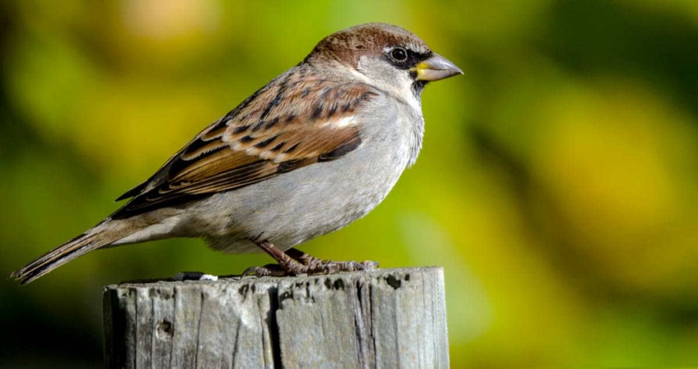

Everyone knows the house sparrow, but its numbers have dropped alarmingly. They're
still common garden visitors in many areas, though.
The male House Sparrow has a chestnut brown back with black streaks, while the underparts,
rump and crown are grey. The nape is chestnut brown, the cheeks are dull white, and
they have a black eye stripe and bib. They also have a light wing bar. The beak is a
yellow-brown in winter, but black in the summer, and the legs are pale brown.
The female is paler and lacks the grey crown, white cheeks, black bib and eye stripe and
chestnut brown nape, but has a straw coloured stripe behind the eye.
Noisy and gregarious, these cheerful exploiters of man's rubbish and wastefulness have
managed to colonise most of the world. The ultimate avian opportunist perhaps. Monitoring
suggests a severe decline in the UK house sparrow population, recently estimated as
dropping by 71 per cent between 1977 and 2008 with substantial declines in both rural
and urban populations. While the decline in England continues, Breeding Bird Survey
data indicate recent population increases in Scotland, Wales and Northern Ireland.
Almost anything! The House Sparrow's diet is diverse: seeds, nuts, berries, buds, insects and scraps, etc. Seeds are their favourites, though they're not too fussy and will try most foods, in feeders or on a bird table such as sunflower hearts, high energy seed, peanuts, suet, kitchen scraps, etc.
Farmland, Urban and suburban
House sparrows can be found from the centre of cities to the farmland of the countryside, they feed and breed near to people. It is a species vanishing from the centre of many cities, but is not uncommon in most towns and villages. It is absent from parts of the Scottish Highlands and is thinly distributed in most upland areas.
You can see house sparrows all year-round.